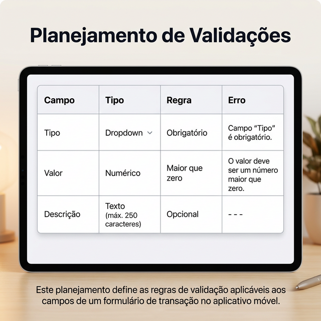

Estudo de Caso 5 — Formulários e Validação
Objetivo da Semana
Detalhar de forma completa a estrutura das coleções no Firebase/Firestore. Além disso, esquematizar os formulários e definir as regras de validação para cada campo, garantindo que o banco de dados receba informações corretas na semana seguinte.
Passo a Passo da Atividade
Crie uma tabela de definição de campos para cada coleção do projeto, indicando o nome do campo, o tipo no Firestore, se é obrigatório e, quando aplicável, se é uma referência (Document Reference).
Projete quais widgets serão utilizados (Ex: TextField, DropDown, DatePicker) para cada dado a ser recolhido nos formulários. Defina para cada um qual regra de validação deverá ser imposta e qual a mensagem de erro será exibida ao usuário (ex: "Valor deve ser maior que 0").
Exemplo de Prompt: "Para um formulário de Cadastro no meu aplicativo, liste todos os campos necessários indicando o tipo de widget e a regra de validação..."
Apresente de maneira unificada essas duas tabelas: a de coleções e a de planejamento dos widgets e validações. Este documento servirá de manual para a montagem final no FlutterFlow e no Firebase.
Para concluir as atividades desta semana, reúna todas as informações e artefatos gerados nos passos anteriores e preencha o template oficial de entrega. Faça uma cópia do documento para a sua conta Google e compartilhe-o com o professor.
📱 Estudo de Caso: FinanCampus
Veja como o grupo do FinanCampus documentou as coleções e as validações nesta semana.

Coleções documentadas (2 coleções):
- categorias: nome (String, obrigatório), icone (String), cor (String)
- transacoes: tipo (String, obrigatório: 'Renda' ou 'Despesa'), descricao (String), valor (double, obrigatório), data (Timestamp, obrigatório), usuario_uid (String — UID do Firebase Auth), categoria_ref (Document Reference → categorias)
A documentação está pronta para ser usada como referência na Semana 6 ao criar as coleções no Firebase via FlutterFlow.
Tabela de planejamento de validações (formulário "Nova Transação"):
- Campo "Tipo": DropDown — obrigatório (Renda ou Despesa).
- Campo "Valor": TextField numérico — obrigatório, maior que zero.
- Campo "Descrição": TextField texto — opcional.
- Campo "Data": DatePicker — obrigatório, sem datas futuras.
- Campo "Categoria": DropDown vinculado à coleção
categorias— obrigatório.
As validações serão implementadas no FlutterFlow na Semana 6,
quando as coleções já estarão conectadas e o DropDown de Categoria poderá
ser vinculado diretamente à coleção categorias do Firestore.